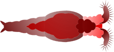

Talks & Teaching
A reverse chronological record of where this work has been spoken about, and the courses I have taught and supported. Where a talk matches a published paper, the paper is on Research & Publications.
Talks
Posters

Teaching
Data analysis in biology. About 300 second year biology bachelor students per year. Topics include data visualisation and processing, statistical hypothesis testing, linear and logistic and Poisson regression, linear mixed models, intro linear algebra for linear models, goodness of fit. Theoretical lectures paired with practical sessions and flipped classroom videos.
My role. Taught four of the theoretical lectures in 2024.
Practical exercise support, methodological and computational (R) Q&A, main contact for statistical questions outside class hours, course forum support. Wrote a statistics and computation FAQ for the students proactively.
Head TA in 2022 and 2023. Screening of TA candidates, briefing and organisation of the selected TAs, primary TA contact person.
An Introduction to the Basics of R. Two-day course for novice R users with a life and environmental science background.